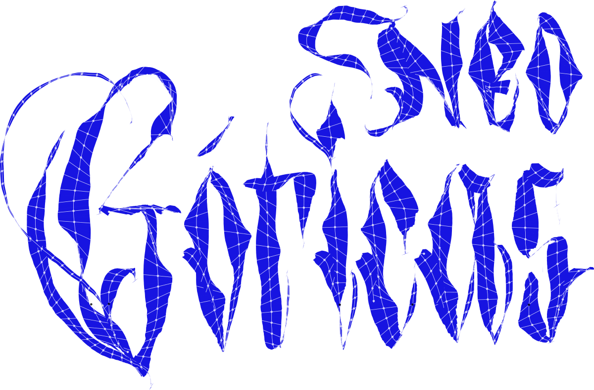

Charla · Del píxel al gesto vectorial
El vínculo entre herramienta, gesto y forma a través de la evolución de eQuills.
Processing Community Day
2
0
2
6
CDMX

Encuentro sobre caligrafía digital y código
Cómo el gesto, el trazo y el código construyen nuevas formas de escribir en pantalla.
· CENTRO · Aula B600
Herramientas para otras formas de escribir
La forma de las letras depende de las herramientas que usamos para escribirlas. Los eQuills son instrumentos de caligrafía creados con código para producir marcas imposibles con herramientas físicas.
Una escritura histórica, nuevas herramientas
Esta edición toma la caligrafía gótica como campo de exploración: observar cómo se construye la letra y experimentar con lo que sucede al registrar y transformar su ejecución mediante código.
Charla + jam + live coding
El vínculo entre herramienta, gesto y forma a través de la evolución de eQuills.
Calígrafos invitados y programadores trabajan en dupla, probando y modificando herramientas de escritura en tiempo real.
Para diseñadores, programadores y entusiastas de las letras. Trae tu tableta gráfica y/o tu laptop.
· Aula B600
Letras, código y comunidad
Andrés Ochoa · Andrew Alva · Juan Fuentes · Eli Ramos
Equipo de letristas y programadores que explora nuevas posibilidades para la caligrafía. Usan herramientas de código abierto y comparten las propias para ampliar en comunidad las posibilidades de la escritura digital.